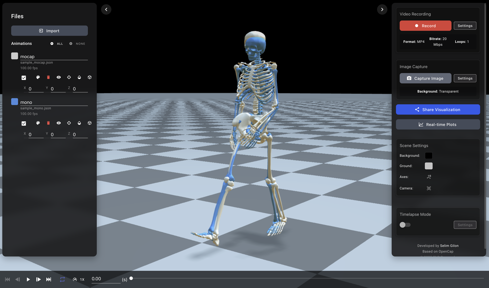

OpenCap Visualizer: A Web-Based Platform for Interactive Biomechanics Visualization and Automated Video Generation
Selim Gilon ![]()
Summary
OpenCap Visualizer is a comprehensive web-based platform for interactive visualization and automated video generation of biomechanics data. The software provides both a browser-based interface for real-time 3D visualization of human movement and a Python API for programmatic video generation from motion capture data. Built with Vue.js and Three.js, the visualizer supports multiple data formats including OpenSim models (.osim/.mot files) and JSON-based motion data, enabling researchers to analyze and share biomechanics simulations with unprecedented ease.
The platform addresses the critical need for accessible visualization tools in biomechanics research, where complex 3D motion data traditionally requires specialized software for analysis and presentation. OpenCap Visualizer democratizes access to biomechanics visualization by offering a browser-based solution requiring no local installation, alongside a Python package for reproducible, automated video generation.
Statement of need
Biomechanics research generates complex 3D motion data that is challenging to visualize, analyze, and communicate effectively. Traditional visualization tools often require expensive commercial software, complex installation procedures, or specialized technical expertise, creating barriers for researchers, clinicians, and educators. Furthermore, generating videos for presentations, publications, or educational materials typically involves manual screen recording or complex rendering pipelines that are time-consuming and difficult to reproduce.
OpenCap Visualizer fills this gap by providing a modern, web-based solution that combines interactive visualization with automated video generation capabilities. The software enables researchers to:
- Visualize complex biomechanics data without software installation through any modern web browser
- Generate publication-quality videos programmatically using Python for reproducible research workflows
- Share visualizations easily through URL-based sharing with advanced compression algorithms
- Compare multiple subjects simultaneously with customizable colors, transparency, and camera controls
- Integrate with existing pipelines through comprehensive Python API and command-line interface
Key Features
Interactive Web-Based Visualization
The core visualization engine is built on Three.js, providing hardware-accelerated 3D rendering directly in web browsers. Key features include:
- Real-time 3D rendering of skeletal models with anatomically accurate geometry
- Multi-subject comparison with independent color coding and transparency controls
- Marker visualization supporting standard motion capture marker sets (.trc file)
- Video synchronisation with skeleton to enable simultaneous viewing of original footage and motion data
- Timeline controls with adjustable playback speed and frame-by-frame navigation
- Recording capabilities for capturing custom video segments directly from the web interface
- Image capture for generating high-resolution screenshots at specific time points
- Timelapse mode for creating accelerated visualizations of long-duration movements
- Color controls for customizing background, ground plane, skeletal models, and markers
Python API for Automated Video Generation
The opencap-visualizer Python package provides programmatic access to video generation functionality:
import opencap_visualizer as ocv
# Generate video from single subject
success = ocv.create_video(
"subject_data.json",
"output_video.mp4",
camera="anterior",
loops=2
)
# Compare multiple subjects
success = ocv.create_video(
["subject1.json", "subject2.json"],
"comparison.mp4",
colors=["red", "blue"],
camera="sagittal"
)The API supports extensive customization options including viewport dimensions, camera angles, subject colors, transparency levels, and animation loops, enabling integration into automated analysis pipelines.
Advanced Data Compression and Sharing
OpenCap Visualizer implements a sophisticated multi-layer compression system that reduces 5MB+ motion capture files to shareable URLs under 1KB, achieving compression ratios exceeding 99.98%. This enables seamless sharing of complex biomechanics visualizations through simple web links.
Format Compatibility
The software supports multiple data formats common in biomechanics research:
- OpenSim models (.osim) with motion files (.mot)
- JSON-based motion data from OpenCap and other sources
- TRC marker files for traditional motion capture data
- Custom JSON formats with flexible schema support
Future Enhancements
The platform continues to evolve with additional features in development, including support for force data visualization, muscle activation patterns, and expanded biomechanical analysis tools. The modular architecture ensures seamless integration of new capabilities while maintaining backward compatibility.
Implementation
OpenCap Visualizer is implemented as a modern web application with a complementary Python package:
Frontend Architecture
- Vue.js 2.x for reactive user interface components
- Three.js for 3D graphics rendering and animation
- Vuetify for Material Design components
Backend Services
- Node.js sharing backend for URL-based data sharing with compression
- Python CLI and API using Playwright for automated browser control
- Headless video generation with configurable quality and format options
Data Processing
The software implements efficient algorithms for: - Delta compression for motion data reducing file sizes by 40-60% - Precision optimization maintaining 1mm accuracy while reducing storage - Real-time interpolation for smooth animation playback - Automatic subject centering and camera positioning
Research Applications
OpenCap Visualizer has been designed to support diverse biomechanics research applications:
Clinical Gait Analysis
The platform enables clinicians to visualize patient gait patterns, compare pre/post-intervention results, and generate videos for patient education and clinical documentation.
Sports Biomechanics
Researchers can analyze athletic movements, compare techniques across athletes, and create educational content for coaching and training programs.
Rehabilitation Research
The software supports visualization of rehabilitation exercises and recovery progress, enabling researchers to track changes in movement patterns over time.
Educational Applications
Educators can create interactive demonstrations of human movement principles, making complex biomechanics concepts accessible to students without specialized software requirements.
Figures

Acknowledgements
We acknowledge the contributions of the OpenCap development team and the broader biomechanics research community for their feedback and testing of the platform. This work builds upon the foundation of open-source biomechanics tools including OpenSim and the Three.js graphics library.